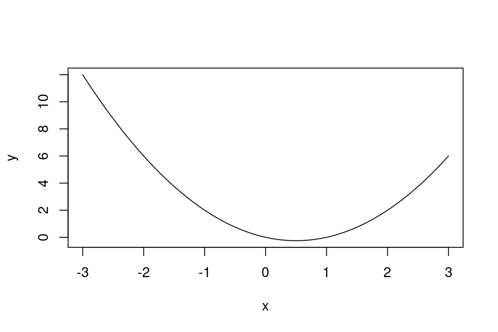
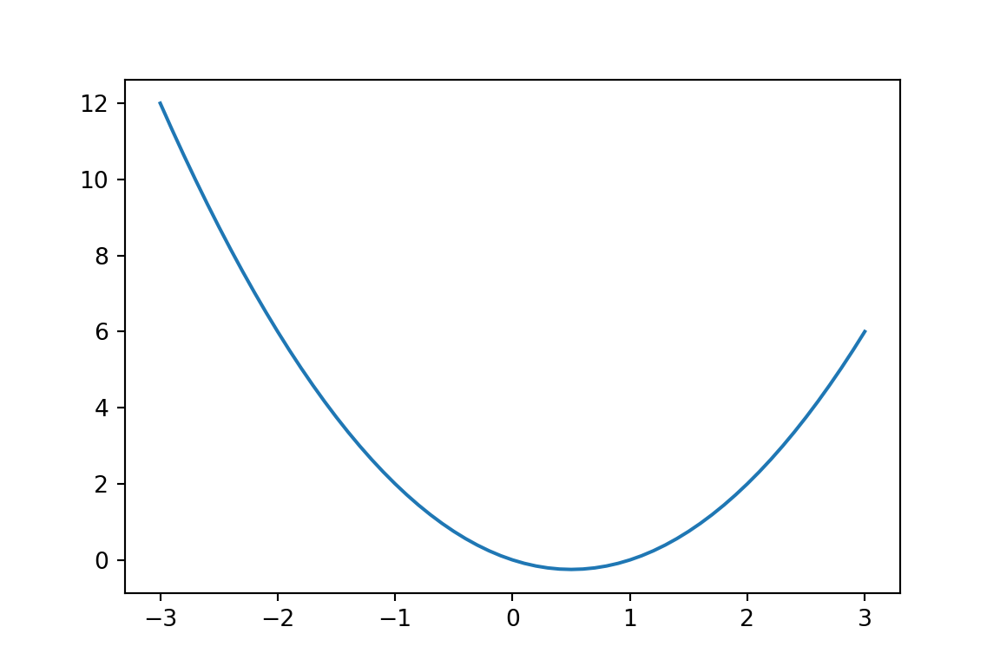

# I am a comment: R ignores everything after a '#'. The line below does the work.
print("Beep bop beep")[1] "Beep bop beep"Welcome to MATH7432! Over the next five weeks we will learn how to program, in both R and Python, and how to use them to build the computational tools that modern statistics runs on. By the end of the module you will have implemented, from scratch, algorithms that estimate statistical models: the same family of algorithms that trains neural networks. This week we start from zero: no programming background is assumed.
Before the code, three definitions, compressed as much as academically acceptable. A computer is a device with a processor (which does arithmetic, very fast), memory (which holds the numbers the processor is currently working on) and storage (which holds files that survive a reboot). A program is a list of instructions for the processor. Processors only understand machine code (streams of 0s and 1s), which humans are famously bad at writing, so we write programs in a programming language: a formal language that is readable by humans and translated for the machine. R and Python, the two languages of this module, are both high-level, interpreted languages: high-level means they read almost like mathematics, and interpreted means each line is translated and executed on the spot, so you can have a live conversation with your computer: type a command, get an answer, type the next one. This makes them ideal for data analysis, where you rarely know step 10 before seeing the result of step 3.
R was created in 1993 by Ross Ihaka and Robert Gentleman in Auckland as an open-source descendant of the S language, and it has since become the lingua franca of statistics: free, open source, with thousands of contributed packages covering essentially every statistical method ever published.
Python was created in 1991 by Guido van Rossum in the Netherlands, and is named after the comedy group Monty Python, not the snake. It is a free, open-source, general-purpose language with a philosophy of readability. Through the libraries numpy and pandas, which we will lean on heavily, it has become the other lingua franca of scientific computing, and the language most machine learning is written in.
A good statistician picks the right tool for the task, and today the tasks of statistics are done in these two: the modern statistician needs both in their toolset! So in this module you will learn both of them, side by side. Every example in these notes appears in both languages, translated line for line, and the translation is itself part of the course: hopping between the two until the crossing feels routine is exactly the skill we are after.
Throughout these notes you will meet chunks of code with their output printed underneath: side by side in the two languages, R always on the left, Python always on the right (on a narrow screen the columns stack, and the bold label above each chunk tells you which is which). Both columns are for you: read them as a pair, and let each language sharpen the other. For the exercises, work in whichever language you know less well, alternating between the two if you know neither, and always check the solutions for both (the preface has the full strategy). Here is the layout in action:
R
# I am a comment: R ignores everything after a '#'. The line below does the work.
print("Beep bop beep")[1] "Beep bop beep"Python
# I am a comment: Python ignores everything after a '#'. The line below does the work.
print("Beep bop beep")Beep bop beepThe notes are designed for the labs: read a section, copy the code into RStudio, run it, break it, fix it, and do the exercises as you meet them. Programming is not a spectator sport.
You will interact with R through RStudio, a program that wraps R in a friendly interface. Both are installed on the university machines; for your own laptop, install R from r-project.org first and RStudio from posit.co second. When you open RStudio you will see several panels:
> prompt): type a command, press Enter, R answers immediately;Ctrl + Enter (Cmd + Enter on a Mac) on a line to send it to the console;Note for Python: everything in this section applies on the Python side too. RStudio speaks Python as well, and it is what we use in the labs for both languages: a Python script ends in .py instead of .R, the Python console prompt is >>> rather than >, and on your own laptop you will want Python from python.org (the university machines have it already). Comments are # in Python too, so everything below about commenting transfers unchanged.
The console is for experiments; a script (a plain text file with extension .R, created via File > New File > R Script) is for anything you want to keep. The console forgets, a saved script does not. A good workflow, and the one to use in the labs, is: type your commands in a script, run them with Ctrl + Enter, and save the script as you go. Future you, who returns after a week and remembers nothing, will be grateful.
Future you will be even more grateful for comments. Any text after a # on a line is ignored, in both languages, which makes it the place to explain why the code does what it does:
R
# convert a temperature from Celsius to Fahrenheit
20 * 9 / 5 + 32[1] 68Python
# convert a temperature from Celsius to Fahrenheit
20 * 9 / 5 + 3268.0We comment code generously in these notes, and you should do the same in yours.
Every R function has a help page: ?seq (or help(seq)) opens the documentation for seq. The Description, Usage and Arguments sections are the ones to read first, and the Examples at the bottom can be copy-pasted. Python’s equivalent is help() (e.g. help(len), or help(np.arange) once numpy is loaded), and the online documentation for numpy and pandas is excellent. For anything the help pages cannot answer, the internet is full of people who had your exact error message before you: Stack Overflow in particular. Reading other people’s answers is a core programming skill, not cheating.
At its heart, the processor is a very fast calculator, and the console gives you direct access to it. All the basic operations are here:
| Operation | R | Python |
|---|---|---|
| Add / subtract | 2 + 3, 2 - 3 |
2 + 3, 2 - 3 |
| Multiply / divide | 2 * 3, 2 / 3 |
2 * 3, 2 / 3 |
| Power | 2^10 |
2**10 |
| Integer division | 7 %/% 2 |
7 // 2 |
| Modulus (remainder) | 7 %% 2 |
7 % 2 |
| Square root | sqrt(2) |
math.sqrt(2) |
| Natural log | log(2) |
math.log(2) |
| Exponential | exp(1) |
math.exp(1) |
| Trigonometry | sin(pi / 2), cos(2 * pi) |
math.sin(math.pi / 2), math.cos(2 * math.pi) |
Note for Python: the math. prefix in the right-hand column means those functions live in the math library, which must be loaded (once, at the top of your script) with import math. That includes the constant math.pi, since bare pi does not exist in Python. Loading libraries is everyday Python life; numpy and pandas arrive later this chapter in exactly the same way. And one trap deserves its own sentence: the power operator in Python is **, because ^ exists there too but means something entirely different (bitwise XOR): 2^10 runs happily in Python and returns 8. Ouch.
R
3 + 5 * 2[1] 13Python
3 + 5 * 213In the R output, the [1] tells you that 13 is the first element of the answer: for now answers have only one element, but that changes very soon (Python just prints the bare number). Operations follow the usual algebraic precedence (powers, then multiplication and division, then addition and subtraction, left to right), and parentheses override it:
R
3 + 7 * 5 / 3 - 2[1] 12.66667(3 + 7) * 5 / (3 - 2)[1] 50Python
3 + 7 * 5 / 3 - 212.666666666666666(3 + 7) * 5 / (3 - 2)50.0So any formula you can write on paper, you can type. Take, for instance, the one that circles your lecturer’s mind at 4am like a haunted seagull: \frac{\sqrt{3/4}}{\frac{1}{3} - \frac{2}{\pi^2}}. Here you go, be free, little bird:
R
sqrt(3 / 4) / (1 / 3 - 2 / pi^2)[1] 6.626513Python
import math # sqrt, log, pi & co. live in the math library
math.sqrt(3 / 4) / (1 / 3 - 2 / math.pi**2)6.626513139875386Use the console to evaluate:
%% operator, % in Python, is your friend: what should the remainder be?);A calculator with no memory forces you to re-type intermediate results. Our languages instead let you store any result in a variable (a labelled box in memory) using the assignment operator: <- in R (read it as “gets”), the plain = in Python:
R
x <- 20 - 16
y <- 4 + 5
x - y[1] -5Python
x = 20 - 16
y = 4 + 5
x - y-5Note on <- vs =: R also accepts = for assignment, and fingers fresh from the Python column will type it on reflex, but the R community’s convention is <-, and we follow it in these notes. Python offers no choice: assignment is =, and <- is not assignment at all there. In Python x <- 3 parses as “x less than -3”, a comparison that quietly returns True or False. Beware when switching columns.
Typing a variable’s name prints its content, and the environment panel of RStudio lists everything you have created:
R
x[1] 4y[1] 9Python
x4y9Three things to know about assignment. First, both languages are case-sensitive, so x and X are different names, and asking for a variable that does not exist is an error:
R
XError in eval(expr, envir, enclos): object 'X' not foundPython
XNameError: name 'X' is not definedSecond, assigning to an existing variable silently overwrites it; neither language asks “are you sure?”:
R
x <- -100
x[1] -100Python
x = -100
x-100Third, a variable can appear on both sides of the assignment. The statement below is nonsense as an equation but perfectly sensible as an instruction: take the current value of x, add 1, store the result back in x:
R
x <- x + 1
x[1] -99Python
x = x + 1
x-99This little idiom is the beating heart of every iterative algorithm we will write in this module, so stare at it until it feels normal.
Variables also make code readable. Compare the seagull formula from earlier with:
R
numerator <- sqrt(3 / 4)
denominator <- 1 / 3 - 2 / pi^2
numerator / denominator[1] 6.626513Python
numerator = math.sqrt(3 / 4)
denominator = 1 / 3 - 2 / math.pi**2
numerator / denominator6.626513139875386Same result, but each piece now has a name, can be inspected separately, and can be reused. Name your variables like this: lowercase, words separated by _, meaning over brevity (a convention both language communities happen to agree on).
You deposit £2000 in an account paying 3.5% interest per year. After t years the balance is 2000 \times 1.035^{t}.
deposit, rate and years (10 years), and compute the final balance using only the variables, storing it in balance.rate, re-run your lines, and report the new balance. Notice how little typing part (c) took: that is why we use variables.Not everything in a variable is a number. Both languages distinguish several types of value, and R’s class() (Python’s type()) tells you which one you are holding:
R
class(3.14) # numeric: real numbers[1] "numeric"class("statistics") # character: text, always in quotes[1] "character"class(TRUE) # logical: TRUE or FALSE[1] "logical"Python
type(3.14) # float: real numbers<class 'float'>type("statistics") # str: text, always in quotes<class 'str'>type(True) # bool: True or False<class 'bool'>Numbers you know. Character values (strings) are text wrapped in quotes: without the quotes, statistics would be the name of a variable. Logical values are the atoms of decision-making in a program; Chapter 2 is largely about them, so we park them here.
Note for Python: the type names differ (float for numeric, str for character, bool for logical) and so does the spelling of the logicals: R shouts TRUE and FALSE in full capitals, Python writes True and False with a capital initial only. Each language rejects the other’s spelling.
Statistics is not done one number at a time: you have n observations, and you want to act on all of them at once. R’s fundamental data structure, the vector, is exactly that: an ordered collection of values of the same type. The workhorse for creating one is c(), short for combine.
Note for Python: plain Python has lists ([1.62, 1.85], square brackets), but the object that matches R’s vector, elementwise mathematics included, is the array from the numpy library, the foundation of all scientific Python. Load it once per script with import numpy as np; everything in it is then available as np.something, and np.array([...]) is your c(). Every vector and matrix in these notes goes through numpy.
R
heights <- c(1.62, 1.85, 1.71, 1.68, 1.79) # heights in metres
heights[1] 1.62 1.85 1.71 1.68 1.79length(heights) # how many elements?[1] 5Python
import numpy as np # load numpy once per script
heights = np.array([1.62, 1.85, 1.71, 1.68, 1.79]) # heights in metres
heightsarray([1.62, 1.85, 1.71, 1.68, 1.79])len(heights) # how many elements?5Vectors of text work the same way (c("Ada", "Bea", "Cal")), but one vector cannot mix types: if you try c(1, "two"), R silently converts everything to character, worth knowing before it surprises you. (numpy plays it exactly the same: np.array([1, "two"]) comes back as two strings.)
Typing long vectors by hand does not scale, so both languages give you generators. In R the colon operator builds integer sequences, seq() builds general ones, and rep() repeats; numpy’s counterparts are np.arange, np.linspace, np.tile and np.repeat:
R
1:10 # integers from 1 to 10 [1] 1 2 3 4 5 6 7 8 9 105:-5 # sequences can go downhill [1] 5 4 3 2 1 0 -1 -2 -3 -4 -5seq(from = 0, to = 1, by = 0.1) # step size 0.1 [1] 0.0 0.1 0.2 0.3 0.4 0.5 0.6 0.7 0.8 0.9 1.0seq(from = 0, to = 1, length.out = 5) # exactly 5 equally spaced points[1] 0.00 0.25 0.50 0.75 1.00rep(c(1, 2), times = 3) # repeat the whole vector 3 times[1] 1 2 1 2 1 2rep(c(1, 2), each = 3) # repeat each element 3 times[1] 1 1 1 2 2 2Python
np.arange(1, 11) # integers from 1 to 10 (end point EXCLUDED)array([ 1, 2, 3, 4, 5, 6, 7, 8, 9, 10])np.arange(5, -6, -1) # sequences can go downhillarray([ 5, 4, 3, 2, 1, 0, -1, -2, -3, -4, -5])np.arange(0, 1.1, 0.1) # step size 0.1 (stop just past 1 so 1 makes it in)array([0. , 0.1, 0.2, 0.3, 0.4, 0.5, 0.6, 0.7, 0.8, 0.9, 1. ])np.linspace(0, 1, 5) # exactly 5 equally spaced pointsarray([0. , 0.25, 0.5 , 0.75, 1. ])np.tile([1, 2], 3) # repeat the whole vector 3 timesarray([1, 2, 1, 2, 1, 2])np.repeat([1, 2], 3) # repeat each element 3 timesarray([1, 1, 1, 2, 2, 2])Note for Python: np.arange(a, b) stops one step before b: the end point is excluded, which is why the integers 1 to 10 take np.arange(1, 11). This end-exclusion habit runs right through Python (it returns in slicing, below), so burn it in now.
seq() is our first function with named arguments: from, to, by, length.out. Naming the arguments (rather than relying on their order) keeps calls readable; check ?seq for the full story. Python has named (keyword) arguments too: np.linspace(start = 0, stop = 1, num = 5) reads just as well.
Produce each of the following vectors in a single command, without typing out all the elements:
Here is the superpower: arithmetic on vectors happens elementwise, with no extra effort on your part. A scalar is applied to every element:
R
x <- c(1, 2, 77, 2, -2, 14)
x + 2[1] 3 4 79 4 0 16x * 10[1] 10 20 770 20 -20 140x^2[1] 1 4 5929 4 4 196Python
x = np.array([1, 2, 77, 2, -2, 14])
x + 2array([ 3, 4, 79, 4, 0, 16])x * 10array([ 10, 20, 770, 20, -20, 140])x**2array([ 1, 4, 5929, 4, 4, 196])Two vectors of the same length are combined element by element:
R
y <- c(1, 1, 2, 2, 3, 3)
x + y[1] 2 3 79 4 1 17x * y[1] 1 2 154 4 -6 42Python
y = np.array([1, 1, 2, 2, 3, 3])
x + yarray([ 2, 3, 79, 4, 1, 17])x * yarray([ 1, 2, 154, 4, -6, 42])And mathematical functions map over every element too:
R
sqrt(c(1, 4, 9, 16))[1] 1 2 3 4exp(c(0, 1, 2))[1] 1.000000 2.718282 7.389056Python
np.sqrt(np.array([1, 4, 9, 16]))array([1., 2., 3., 4.])np.exp(np.array([0, 1, 2]))array([1. , 2.71828183, 7.3890561 ])This style, one expression acting on n numbers at once, is called vectorised code. It is how R (and numpy, which exists for precisely this) wants to be written: compact, close to the mathematical notation, and (as we will measure in Chapter 2) much faster than handling elements one at a time.
Some functions instead summarise a whole vector into one number, which covers a good share of day-one statistics:
R
sum(heights)[1] 8.65mean(heights)[1] 1.73max(heights)[1] 1.85min(heights)[1] 1.62which.max(heights) # the POSITION of the largest element[1] 2Python
np.sum(heights)np.float64(8.649999999999999)np.mean(heights)np.float64(1.7299999999999998)np.max(heights)np.float64(1.85)np.min(heights)np.float64(1.62)np.argmax(heights) # the INDEX of the largest element -- counted from 0!np.int64(1)(numpy also offers these as methods attached to the array itself, heights.mean(), a spelling you will meet everywhere in the wild; the function form keeps our columns aligned. And yes, which.max and np.argmax just disagreed by one about the same element: the next-but-one section explains why.)
What if the two vectors have different lengths? R does not give up: it recycles the shorter vector, repeating it until it matches the longer one. Sometimes that is exactly what you want:
R
1:6 + c(0, 100) # c(0, 100) becomes 0, 100, 0, 100, 0, 100[1] 1 102 3 104 5 1061:6 * c(1, -1) # alternating signs, in one command[1] 1 -2 3 -4 5 -6Python
np.arange(1, 7) + np.tile([0, 100], 3) # numpy will NOT stretch a length-2 array: tile it yourselfarray([ 1, 102, 3, 104, 5, 106])np.arange(1, 7) * np.tile([1, -1], 3) # alternating signs, repetition made explicitarray([ 1, -2, 3, -4, 5, -6])Note for Python (recycling vs broadcasting): numpy does not recycle. Its rule, called broadcasting, only stretches a scalar (or, once we reach matrices, a length-1 axis) to fit; two vectors of lengths 6 and 2 simply refuse to combine, with an error, not a warning. That is why the Python column above repeats the short array explicitly with np.tile. You lose a convenience and dodge a footgun; many would call that a win.
R only complains when the longer length is not a multiple of the shorter, and even then it is a warning, not an error, and you still get an answer. numpy, meanwhile, refuses outright and names the two shapes it could not reconcile:
R
1:6 + c(0, 10, 100, 1000)Warning in 1:6 + c(0, 10, 100, 1000): longer object length is not a multiple of
shorter object length[1] 1 12 103 1004 5 16Python
np.arange(1, 7) + np.array([0, 10, 100, 1000])ValueError: operands could not be broadcast together with shapes (6,) (4,) This is the footgun: if your two vectors were supposed to be the same length and are not (say a typo dropped an observation), R may silently recycle and hand you plausible-looking garbage. When a warning like the one above appears, treat it as an error until proven innocent, and check your length()s. (Note for Python: this footgun is R-only; numpy’s refusal to broadcast mismatched lengths turns the silent bug into an immediate, honest error.)
For each command, write down your predicted output before running it, then check. One point per correct prediction, minus ten if you skip the predicting part.
1:6 + c(0, 10)c(1, 2, 3) * c(1, -1)1:8 / c(1, 2, 4, 8)(1:3)^(1:6)On the Python side, translate each expression into numpy (np.arange, np.array) and predict instead whether numpy runs it or raises an error; for those that refuse, reproduce R’s answer with an explicit np.tile.
Every element of a vector has a position, and here the two languages part ways in the most consequential fashion of the whole module: R counts positions from 1, like humans and mathematicians; Python counts from 0. Square brackets extract elements by position:
R
x <- c(5, 8, 1, 9, 3, 7)
x[1] # first element[1] 5x[3] # third element[1] 1x[length(x)] # last element, whatever the length is[1] 7Python
x = np.array([5, 8, 1, 9, 3, 7])
x[0] # first elementnp.int64(5)x[2] # third elementnp.int64(1)x[len(x) - 1] # last element (see the note: x[-1] is slicker)np.int64(7)R counts positions from 1, Python from 0: the first element is x[1] in R but x[0] in Python, and the element in position k of your maths is x[k] in R but x[k - 1] in Python.
Negative indices are worse than different: they are false friends. In R, x[-1] means “everything except the first element”. In Python, x[-1] means “count from the end”: it is the last element (a beloved idiom, no len(x) - 1 needed). The same characters, two entirely different results, and no error message to warn you. More translation bugs are born on this line than anywhere else: when in doubt, print and check.
The index can itself be a vector, which lets you take slices, cherry-pick, or reorder:
R
x[2:4] # elements 2 to 4[1] 8 1 9x[c(1, 5)] # elements 1 and 5[1] 5 3x[c(5, 1)] # same elements, opposite order[1] 3 5Python
x[1:4] # elements 2 to 4: indices 1, 2, 3 -- the slice EXCLUDES its endarray([8, 1, 9])x[[0, 4]] # elements 1 and 5array([5, 3])x[[4, 0]] # same elements, opposite orderarray([3, 5])(There is the end-exclusion again: Python’s slice a:b runs from index a up to, but not including, index b, just like np.arange.)
A negative index means “everything except” in R, and something else entirely in Python:
R
x[-1] # drop the first element[1] 8 1 9 3 7x[-c(2, 3)] # drop the second and third[1] 5 9 3 7Python
np.delete(x, 0) # drop the first element -- x[-1] would NOT do this...array([8, 1, 9, 3, 7])np.delete(x, [1, 2]) # drop the second and thirdarray([5, 9, 3, 7])x[-1] # ...because in Python this counts from the endnp.int64(7)And indexing on the left of the assignment overwrites elements in place:
R
x[3] <- 100 # replace the third element
x[1] 5 8 100 9 3 7x[c(1, 2)] <- 0 # replace several at once
x[1] 0 0 100 9 3 7Python
x[2] = 100 # replace the third element
xarray([ 5, 8, 100, 9, 3, 7])x[[0, 1]] = 0 # replace several at once
xarray([ 0, 0, 100, 9, 3, 7])One teaser before we move on: in both languages, brackets also accept conditions, so x[x > 50] returns the elements larger than 50. How and why that works is the business of Chapter 2: resist the urge for one more week.
Ten students sat a test, scoring (out of 100):
R
marks <- c(63, 58, 71, 45, 82, 69, 77, 52, 88, 60)Python
marks = np.array([63, 58, 71, 45, 82, 69, 77, 52, 88, 60])Two vectors of equal length are begging to be plotted against each other, and base R obliges with plot(); Python’s counterpart is the matplotlib library:
R
x <- seq(-3, 3, by = 0.1)
y <- x^2 - x
plot(x, y, type = "l") # type = "l" joins the points with a line
Python
import matplotlib.pyplot as plt # Python's plotting library
x = np.arange(-3, 3.1, 0.1)
y = x**2 - x
plt.plot(x, y) # plt.plot draws a line by default
plt.show()
That is genuinely all it takes to graph a function. (One asymmetry: base R plots points unless you ask for a line with type = "l"; matplotlib’s plt.plot draws a line unless you ask otherwise; plt.scatter is its point-plotter.) We will keep using quick one-liners like this as visual checks, and do plotting properly (labels, colours, themes, publication quality) in Chapter 4.
Variables live in memory, and memory is wiped when your session closes. To keep results, or to share them with anyone who is not inside your session, you write them to a file on disk. The standard exchange format for data is the csv (comma-separated values) file, a plain text table that every spreadsheet and statistics package can read:
R
lancaster_rain <- c(12.5, 8.0, 0.0, 3.2, 21.7) # mm of rain, Mon-Fri. The 0.0 is a typo, surely
write.csv(lancaster_rain, file = "week1_rain.csv", row.names = FALSE)Python
import pandas as pd # Python's table library
lancaster_rain = np.array([12.5, 8.0, 0.0, 3.2, 21.7]) # mm of rain, Mon-Fri. The 0.0 is a typo, surely
pd.DataFrame(lancaster_rain).to_csv("week1_rain_py.csv", index=False)Note for Python: csv duty falls to pandas, Python’s data-frame library (imported as pd by near-universal convention). pandas thinks in tables, so the array is wrapped in a DataFrame on its way to disk, and index=False is the counterpart of R’s row.names = FALSE. The Python column writes to week1_rain_py.csv: a different file name from the R column, so the two languages never overwrite each other’s work.
But where did that file go? Into your working directory: the folder on disk where your session currently “stands”. Any file name without a folder in front of it is read from, or written to, this directory.
R
getwd() # print the current working directoryPython
import os
os.getcwd() # print the current working directoryYou can point elsewhere with a path: "data/week1_rain.csv" means “inside the folder data under the working directory”, and "../week1_rain.csv" means “one folder up”.
R
write.csv(lancaster_rain, file = "data/week1_rain.csv") # needs a 'data' folder to exist
write.csv(lancaster_rain, file = "../week1_rain.csv") # parent directoryPython
pd.DataFrame(lancaster_rain).to_csv("data/week1_rain_py.csv") # needs a 'data' folder to exist
pd.DataFrame(lancaster_rain).to_csv("../week1_rain_py.csv") # parent directoryRather than hard-coding long paths like "C:/Users/you/Desktop/stuff/..." (which break the moment the script moves to another machine), the sane workflow is to keep your scripts and data in one folder and make that the working directory (in RStudio: Session > Set Working Directory > To Source File Location).
Reading the file back in is the mirror image:
R
rain_from_file <- read.csv("week1_rain.csv")
rain_from_file x
1 12.5
2 8.0
3 0.0
4 3.2
5 21.7Python
rain_from_file = pd.read_csv("week1_rain_py.csv")
rain_from_file 0
0 12.5
1 8.0
2 0.0
3 3.2
4 21.7The printout looks slightly different from a vector: it has a column name (x in R; pandas defaults to 0) and numbered rows (from 0 in Python, naturally). That is because read.csv() (and equally pandas’ read_csv()) returns a data frame: the table-shaped cousin of the vector, and the single most important object in applied statistics. It gets the star treatment in Chapter 4; for now, csv out and csv in is all we need.
temps with the daily maximum temperatures 4.2, 6.8, 7.5, 3.1, 5.0, 8.4, 6.9 (°C, a week in a Lancaster spring).week1_temps.csv (Python: week1_temps_py.csv, so the two languages stay out of each other’s way), without row names (pandas: without the index).row.names = FALSE (index=False) in part (b)?You know matrices from linear algebra; both our languages know them too, and (R being built by statisticians, numpy by numerical scientists) they are very good at them. A matrix in R is a vector wrapped onto rows and columns by matrix(); in numpy, a matrix is simply a 2-D array:
R
A <- matrix(c(1, 2, 3, 4, 5, 6), nrow = 2)
A [,1] [,2] [,3]
[1,] 1 3 5
[2,] 2 4 6Python
A = np.array([1, 2, 3, 4, 5, 6]).reshape(2, 3, order="F") # "F" = fill column by column, like R
Aarray([[1, 3, 5],
[2, 4, 6]])Note the order: R fills matrices column by column by default. If your data reads row by row (as it usually does on paper), say so with byrow = TRUE:
R
A <- matrix(c(1, 2, 3, 4, 5, 6), nrow = 2, byrow = TRUE)
A [,1] [,2] [,3]
[1,] 1 2 3
[2,] 4 5 6Python
A = np.array([[1, 2, 3],
[4, 5, 6]]) # a list of rows: numpy's natural reading order
Aarray([[1, 2, 3],
[4, 5, 6]])Note for Python: numpy’s own filling order is the opposite of R’s: row by row (“C order”); the order="F" above (“Fortran order”, the column-major convention R inherited) was only there to imitate R’s default. The idiomatic numpy build is the second chunk’s: hand np.array a list of rows and no reshaping is needed, so the code looks like the matrix.
The dimensions are always rows first, columns second:
R
dim(A) # rows, columns[1] 2 3nrow(A)[1] 2ncol(A)[1] 3Python
A.shape # (rows, columns)(2, 3)A.shape[0] # rows2A.shape[1] # columns3You can also build matrices by gluing vectors together: cbind() (numpy: np.column_stack) binds them as columns, rbind() (np.vstack) as rows. Remember the column one: it earns its keep in the challenge at the end of this chapter.
R
cbind(c(1, 2), c(3, 4)) # two columns [,1] [,2]
[1,] 1 3
[2,] 2 4rbind(c(1, 2), c(3, 4)) # two rows [,1] [,2]
[1,] 1 2
[2,] 3 4Python
np.column_stack([[1, 2], [3, 4]]) # two columnsarray([[1, 3],
[2, 4]])np.vstack([[1, 2], [3, 4]]) # two rowsarray([[1, 2],
[3, 4]])Same square brackets as vectors, now with two positions: [row, column]. Leaving one slot empty (R) or putting a bare colon : in it (Python) means “all of them”:
R
A[1, 2] # row 1, column 2[1] 2A[2, ] # all of row 2[1] 4 5 6A[, 3] # all of column 3[1] 3 6A[, c(1, 3)] # columns 1 and 3 [,1] [,2]
[1,] 1 3
[2,] 4 6Python
A[0, 1] # row 1, column 2 (0-based, as ever)np.int64(2)A[1, :] # all of row 2array([4, 5, 6])A[:, 2] # all of column 3array([3, 6])A[:, [0, 2]] # columns 1 and 3array([[1, 3],
[4, 6]])And t() (in numpy the .T attribute) transposes:
R
t(A) [,1] [,2]
[1,] 1 4
[2,] 2 5
[3,] 3 6Python
A.Tarray([[1, 4],
[2, 5],
[3, 6]])* is not what you thinkHere is the classic trap, and it is the same trap in both languages. The ordinary arithmetic operators work on matrices exactly as they do on vectors, elementwise:
R
B <- matrix(c(1, 2, 3, 4), nrow = 2, byrow = TRUE)
C <- matrix(c(10, 20, 30, 40), nrow = 2, byrow = TRUE)
B + C [,1] [,2]
[1,] 11 22
[2,] 33 44B * C # elementwise! NOT the matrix product [,1] [,2]
[1,] 10 40
[2,] 90 160Python
B = np.array([[1, 2], [3, 4]])
C = np.array([[10, 20], [30, 40]])
B + Carray([[11, 22],
[33, 44]])B * C # elementwise! NOT the matrix productarray([[ 10, 40],
[ 90, 160]])The actual matrix product (rows times columns, as in \left(BC\right)_{ij} = \sum_k B_{ik}
C_{kj}) has its own operator: %*% in R, @ in Python:
R
B %*% C [,1] [,2]
[1,] 70 100
[2,] 150 220Python
B @ Carray([[ 70, 100],
[150, 220]])The usual conformity rule applies: an (n \times k) matrix can only %*% a (k \times m) one. Writing * where you meant %*% (or @) is a rite of passage in either language; the resulting bug is nasty precisely because both versions run without error and return a matrix of the same size. Check a small case by hand when in doubt: that is, conveniently, the next exercise.
Let A = \begin{pmatrix} 2 & 0 \\ 1 & 3 \end{pmatrix}, \qquad B = \begin{pmatrix} 1 & 4 \\ 2 & 5 \end{pmatrix}.
A and B (mind R’s filling order!) and verify your answer with %*% (Python: @).A * B and explain, in one sentence, what your language did instead.t() and %*% (.T and @). Is it equal to (AB)^\top? Should it be?The function with the most misleading name in base R, solve(), computes matrix inverses:
R
B_inv <- solve(B) # the inverse of B
B_inv [,1] [,2]
[1,] -2.0 1.0
[2,] 1.5 -0.5round(B %*% B_inv, 10) # B times its inverse: the identity (up to rounding) [,1] [,2]
[1,] 1 0
[2,] 0 1Python
B_inv = np.linalg.inv(B) # the inverse of B
B_invarray([[-2. , 1. ],
[ 1.5, -0.5]])np.round(B @ B_inv, 10) # B times its inverse: the identity (up to rounding)array([[1., 0.],
[0., 1.]])Note for Python: numpy files all of linear algebra under np.linalg, and names things honestly: np.linalg.inv inverts, np.linalg.solve (coming below) solves systems, np.linalg.det takes determinants. R’s solve() carries the misleading-name burden alone.
(The round() is there because floating-point arithmetic leaves microscopic dust like 2.2e-16 where exact zeros should be; more on that in Chapter 2.) The identity matrix itself, should you need one, is diag(2) in R, np.eye(2) in Python.
A matrix is invertible if and only if its determinant is non-zero, and det() (np.linalg.det) will tell you:
R
det(B)[1] -2S <- matrix(c(1, 2, 2, 4), nrow = 2) # second column = 2 * first: singular
det(S)[1] 0Python
np.linalg.det(B) # -2, plus a speck of that floating-point dustnp.float64(-2.0000000000000004)S = np.array([[1, 2], [2, 4]]) # second column = 2 * first: singular
np.linalg.det(S)np.float64(0.0)Asking for the inverse of a singular matrix fails loudly in both languages (an error, not a warning: priorities in the right place):
R
solve(S)Error in solve.default(S): Lapack routine dgesv: system is exactly singular: U[2,2] = 0Python
np.linalg.inv(S)numpy.linalg.LinAlgError: Singular matrixThe name solve() starts making sense with its two-argument form, which solves the linear system A\mathbf{x} = \mathbf{b}. For
\begin{aligned}
x + 2y &= 5 \\
3x + 4y &= 6
\end{aligned}
\qquad\text{i.e.}\qquad
\underbrace{\begin{pmatrix} 1 & 2 \\ 3 & 4 \end{pmatrix}}_{A}
\mathbf{x}
=
\underbrace{\begin{pmatrix} 5 \\ 6 \end{pmatrix}}_{\mathbf{b}},
R
A <- matrix(c(1, 2, 3, 4), nrow = 2, byrow = TRUE)
b <- c(5, 6)
solve(A, b)[1] -4.0 4.5Python
A = np.array([[1, 2], [3, 4]])
b = np.array([5, 6])
np.linalg.solve(A, b)array([-4. , 4.5])Mathematically this is \mathbf{x} = A^{-1}\mathbf{b}, and solve(A) %*% b (Python: np.linalg.inv(A) @ b) gives the same answer, but the two-argument solve(A, b) / np.linalg.solve(A, b) never forms the inverse explicitly, which is both faster and numerically more stable. Statistics is full of linear systems (you are about to meet the most famous one in Challenge 1.1), so this one-liner will follow you for the rest of your career.
Consider the system \begin{aligned} 2x + y - z &= 8 \\ -3x - y + 2z &= -11 \\ -2x + y + 2z &= -3. \end{aligned}
A and the right-hand side b.A %*% x_sol (A @ x_sol) and comparing with b.Two optional problems to pull the week’s vectors and matrices together.
A company records advertising spend x (in £1000s) and sales y (also £1000s) over eight campaigns:
R
x <- c(1.0, 1.9, 3.1, 3.8, 5.2, 6.0, 7.1, 8.2)
y <- c(2.4, 3.9, 6.3, 7.4, 10.4, 11.7, 14.1, 16.3)Python
x = np.array([1.0, 1.9, 3.1, 3.8, 5.2, 6.0, 7.1, 8.2])
y = np.array([2.4, 3.9, 6.3, 7.4, 10.4, 11.7, 14.1, 16.3])The best-fitting line y = \beta_0 + \beta_1 x (in the least-squares sense) has coefficients \boldsymbol{\hat\beta} = (X^\top X)^{-1} X^\top \mathbf{y}, where X is the matrix whose first column is all 1s and whose second column is x.
cbind() (a neat trick: cbind(1, x) recycles the 1). In Python, where there is no recycling, build the column of ones explicitly: np.column_stack([np.ones(len(x)), x]).t(), %*% and solve() (Python: .T, @ and np.linalg.inv, or better, np.linalg.solve).plot(x, y) and overlay your line with abline(a = beta[1], b = beta[2]). (matplotlib has no abline: use plt.scatter(x, y), then draw the line yourself with plt.plot(x, beta[0] + beta[1] * x).) Admire.You have just fitted your first regression, with your bare hands, using only week-1 material. In Chapter 5 we will fit models like this by optimisation, and see exactly where this magic formula comes from.
Take the 3 \times 3 covariance matrix \Sigma = \begin{pmatrix} 2.0 & 0.8 & 0.4 \\ 0.8 & 1.5 & 0.6 \\ 0.4 & 0.6 & 1.0 \end{pmatrix}.
eigen(Sigma) returns an object with two pieces, which you can extract as eigen(Sigma)$values and eigen(Sigma)$vectors (more on the $ in Chapter 4). In Python the two pieces arrive directly as a pair: evals, evecs = np.linalg.eig(Sigma).
?diag; Python: np.diag, or np.trace for the whole job).V and compute t(V) %*% V (V.T @ V), rounded to 10 decimal places. What matrix do you get, and what does that say about the directions the eigenvectors describe?c(), seq() and rep() (numpy: np.array, np.arange/np.linspace, np.tile/np.repeat), slice them by position (minding who counts from 1 and who from 0) and act on all elements at once with vectorised arithmetic; recycling (R) and broadcasting (numpy) warning bells installed.write.csv/read.csv; pandas’ to_csv/read_csv), and know where your session put them.%*% (@), t() (.T), det(), solve() for inverses and systems (np.linalg’s det, inv and solve), and a first taste of eigen() (np.linalg.eig).Next week, in Chapter 2, we teach the machine to make decisions: TRUE and FALSE (True and False) in earnest, if and else, loops, and with them our first proper algorithm, gradient descent, which will carry us all the way to Chapter 5.